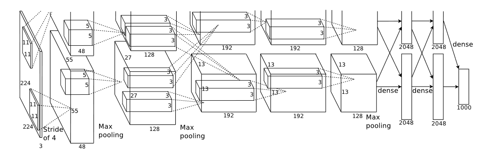
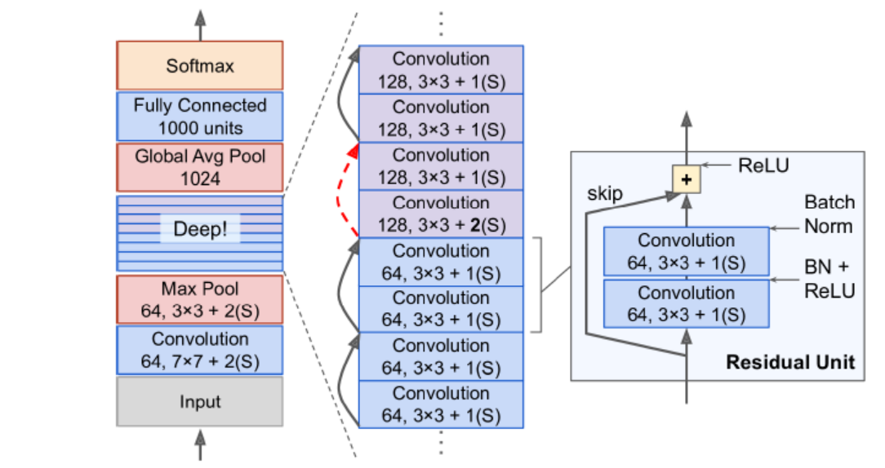
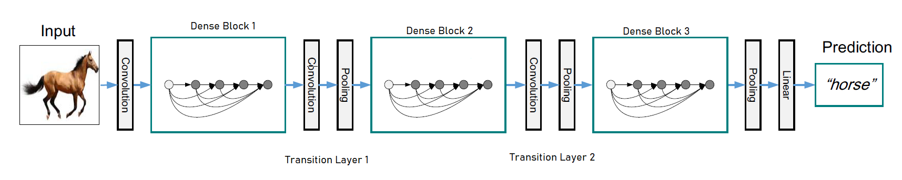

Deeper CNN Variants and their Architecture
<< Notes || Date: 13th May 2022
AlexNet
AlexNet is one of the earliest versions of Deeper CNN and won the 2012 ImageNet challenge. It was first to be deployed with two GPUs using cross-GPU parallelization, where both get to read from and write to another memory directly.
Architecture of AlexNet consists of 8 learned layers - 5 convolutional layers, some of which are followed by pooling layer and 3 fully-connected layers, and for activation function, ReLU is preferred over tanh and sigmoid for being faster to train.
The first convolutional layer filters images with 96 kernels of shape `11 × 11 ×3`. Second convolutional layers, afterwards, take the input (response normalized with ReLU + max-pooled) with 256 kernels of size `5 × 5 ×48`.
Third convolutional layer has 384 kernels of `3 ×3×256` size. Fourth layer has 384 kernels of `3 ×3×192` size, and lastly the fifth convolutional layer has 256 kernels of `3×3×192` size. [Krizhevsky et al., 2012].
Architecture of AlexNet can be seen in the image below :

Source: [Krizhevsky et al., 2012]
In AlexNet, to reduce test error, overlapping pooling is used i.e., `s <z` (stride is less than pooling size) - `3×3` max pooling is used with stride of `2` wherever it was implemented after convolutional layers. All three fully-connected layers, in AlexNet afterwards, each have 4096 neurons and to reduce overfitting, dropout is used with the first two fully-connected layers.
VGG
VGG is developed after AlexNet's success at Visual Geometry Group (VGG) Oxford University. It deployed more depth to the ConvNet architecture by adding more convolutional layers which has been made possible by using small `3×3` kernels in all layers.
In essence, we can say VGG network consists of VGG Blocks where each block has convolutional layers with padding to maintain the resolution, a non-linearity - ReLU, and a pooling layer - max pooling. In VGG, input image of `224×224` is first pre-processed by subtracting the mean of RGB values from each pixel in the image, and then passed into the stack of convolutional layers followed by max-pooled layers forming a block.
All different architectures tried and tested in original paper have 5 blocks in them where each convolutional layer has padding of 1 and all hidden layers equipped with ReLU function. In one of the architecture, VGG-11, Local Response Normalization (LRN) is used, and
in one proposed VGG-16, convolutional filters of the last convolutional layers of later 3 blocks are of size `1×1`. Three major types of proposed architecture can be illustrated as below:

VGG blocks, afterwards followed by three fully-connected layers with 4096 neurons in two of them, and 1000 for each different class in the last fully-connected layer, before SoftMax. VGG networks ran on four nvidia Titan GPUs and took 2-3 weeks for single training. However, for its simplicity, it is still widely used as pre-trained ConvNet model.
Batch Normalization
Batch Normalization is to solve the problem of internal covariate shift while training deep neural networks.
Internal covariate shift is one of the subset of dataset shift that measures the data quality for the performance of network.
Dataset Shift can be said to have three different kinds i.e,
Covariate shift -- Change in the independent variables,
Prior probability shift -- Change in the target variables, and
Concept Shift -- change in the relationship between the independent and target variables.
Internal covariate shift, thus, can be said as the change in the distribution of network activations due to the change in network parameters during training. One of the simplest way to solve it, is by using whitening -- i.e, linearly transforming the inputs to have zero means and unit variances, and decorrelated.
However, in whitening, network does not always produces the same set of activations, but scales it up as the gradient descent step does not account for normalization.
Batch-Normalization solves this problem with whitening using two essentials updates :
1. Instead of whitening input and output layers feature jointly, it normalizes them separately by making it have the mean of zero and variance of 1. For a layer with d-dimension input `x = (x^(1),..,x^(d))`, each dimension is normalized as :
`x̂^((k)) = \frac{x^((k)) - E[x^((k))]}{\sqrt(Var[x^((k))])}`
2. By introducing a pair of parameters to make sure transformation inserted in the network can represent the identity transform `γ^((k))` and `β^((k))`, which scale and shift the normalized value
`y^((k)) = γ^((k))x̂^((k)) + β^((k))`
These paramters are learned along model parameters and restore the representation power of the network
Batch-Normalization Transform : If we have a mini-batch `B` of size `m` i.e, `B = {x_(1), ... ,m}`, with normalized values be `x̂_(1) ... m` and their transformation be `y_(1)... m`, then Batch-Normalization Transform is as `BN_(γ,β) : x_(1)...m →y_(1)..m`
BN Algorithm can be written as :
`μ_(B)← \frac{1}{m}\sum_(i=1)^m x_(i)` //mini-batch mean
`σ_(B)^2 ← \frac{1}{m}\sum_(i=1)^m (x_(i) - μ_(B))^2` //mini-batch variance
`x̂_(i) ← \frac{x_(i) - μ_(B)}{\sqrt(σ_(B)^2 + ∈)}` //normalize
`BN_(γ,β)(x_(i))≡y_(i) ← γx̂_(i) + β`
`=γ ⊙\frac{x_(i) - μ_(B)}{\sqrt(σ_(B)^2 + ∈)} + β` //scale and shift
Here, small constant `∈ > 0` is added to ensure no division by made by `0`. Also, `μ_(B)` and `σ_(B)^2` counteracts scaling with noisy mean and variance, which rather leads to faster training and reduce overfitting than being a problem. Also, suitable mini-batch size for Batch-Normalization is `50 ~ 100`.
ResNet
From the previous two discussions, it appears that learning better network is as easy as stacking layers, but it can lead to the problem of vanishing/exploding gradients which impedes convergence as the number of stacked layers start to increase manifold. Batch Normalization is a way to resolve it [Ioffe & Szegedy, 2015].
However, when deep networks are able to start converging after batch normalization again, a new problem of degradation starts to emerge. Degradation is when with the increase of depth, network accuracy gets saturated and then sharply degrades.
ResNet or Deep Residual Learning is proposed to resolve this degradation problem. It introduced the idea of Residual learning block and shortcut connections.
Consider we have `x` inputs to the first layer and ℌ`(x)` as underlying mapping.
Assuming input and output are of same dimensions, ResNet let stacked layers not directly learn underlying mapping ℌ`(x)` but a residual mapping Ƒ`(x) ≔`ℌ`(x) - x`.
The original function then becomes `Ƒ(x) + x`, and if identity mapping were optimal, it is easier to push residual to zero than to fit an identity mapping by a stack of layers.
Below given image is an example of Residual block
In ResNet, we apply residual learning to each stacked layers, and if `x` and `y` are the input and output vectors of the layer considered, a residual block can be defined as:
`y = Ƒ(x, {W_(i)}) + x`
where function `Ƒ(x, {W_(i)})` represents residual mapping to be learned.
In general, each residual block has two `3×3` convolutional layers with a stride of 1, and each convolutional layer is without a pooling layer but followed by a batch normalization (batch-norm) and a ReLU activation function.
Afterwards, shortcut connection add the input directly before the final ReLU activation function.
It requires `x` and `Ƒ` to be of same dimension. If `x` and `Ƒ` are not of same dimension, we can perform a linear projection `W_(s)` by the
shortcut connections to match the dimensions : `y = Ƒ(x, {W_(i)}) + w_(s)x`

Key things to note: 1. Adding a shortcut connection doesn't add additional parameters, so not adding to computational complexity. 2. Dropout function is not essential to ResNet architecture 3. Even with higher (~10 times) depth, ResNet requires less computational power than VGG-16/VGG-19
DenseNet
DenseNet is proposed to ensure maximum information flow between layers in the network by connecting all layers (with matching feature-map sizes) directly with each other. Here, each layer obtains additional iputs from all preceding layers and passes on its own feature-maps to all subsequent layers.
Contrary to ResNet, in DenseNet features are combined by concatenation before they are passed into a layer. In any `L`-layer network, each `l^(th)` layer has `l` inputs, consisting of the feature-maps of all preceding convolutional blocks, and its own feature-maps are getting passed onto all `L-l` subsequent layers.
This introduces `\frac{L(L+1)}{2}` connections in any `L`-layer network (Huang et al., 2017). Below given image is to illustrate DenseNet :

DenseNet Architecture : If we have a single image `x_(0)`, then in DenseNet of `L`-layers, it will go through non-linear transformation `H_(l)(⋅)` in each layer. Here, `H_(l)(⋅)` is a composite function of Batch-Normalization(BN), followed by a Rectified Linear Unit(ReLU) and a 3 × 3 convolutional kernel
Unlike conventional ConvNet that has layer transition, if `l` indexes the layer, as : `x_(l) = H_(l)(x_(l-1))` or ResNet that has `x_(l) = H_(l)(x_(l-1)) + x_(l-1)` where identity function and the output of `H_(l)` are combined by summation, here each `l^(th)` layer recieves the feature-maps from all the preceding layers `x_(0),...,x_(l-1)` as input:
`x_(l) = H_(l)([x_(0)`, `x_(1)` , ... , `x_(l-1)])`
where `[x_(0),x_(1),...,x_(l-1)]` refers to the concatenation of the feature-maps produced in layers `0,...,l-1`. Importantly, the concatenation in the above equation is not possible if the size of feature-maps are different, therefore we implement down-sampling layers, as in other ConvNet architectures, to change the size of feature-maps.
Network is divided into multiple densely connected dense blocks and layers between these blocks are named as transition layers as shown in the image below :

Each transition layers consists of Batch-Normalization, an `1×1` conventional layer and followed by `2×2` average pooling layer.
Last thing we need to know is - Growth-rate . If each function `H_(l)` produces `k` feature-maps, then each `l^(th)` layer has `k_(0) + k ×(l-1)` input feature-maps, where `k_(0)` is the number of channels in the input layer. This hyper-parameter is referred as Growth-rate of the network, and notedly DenseNet can work effectively with growth-rate as low as `k = 12`
References :
[1] Krizhevsky, A., Sutskever, I., & Hinton, G. E. (2012). Imagenet classification with deep convolutional neural networks. Advances in neural information processing systems (pp. 1097–1105).[2] Simonyan, K., & Zisserman, A. (2014). Very deep convolutional networks for large-scale image recognition. arXiv preprint arXiv:1409.1556.
[3] Ioffe, S., & Szegedy, C. (2015). Batch normalization: accelerating deep network training by reducing internal covariate shift. arXiv preprint arXiv:1502.03167.
[4] Huang, G., Liu, Z., Van Der Maaten, L., & Weinberger, K. Q. (2017). Densely connected convolutional networks. Proceedings of the IEEE conference on computer vision and pattern recognition (pp. 4700–4708).